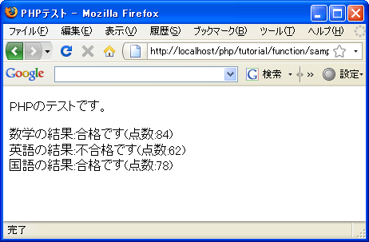

関数の使い方
関数の具体的な使い方について見ていく前に、どのような時に関数を使うと便利なのかを確認しておきます。
例としてテストの結果が合格か不合格かを確認するサンプルを作成します。
$sugaku = 84;
$eigo = 62;
$kokugo = 78;
print '数学の結果:';
if ($sugaku > 75){
print '合格です';
}else{
print '不合格です';
}
print '英語の結果:';
if ($eigo > 75){
print '合格です';
}else{
print '不合格です';
}
print '国語の結果:';
if ($kokugo > 75){
print '合格です';
}else{
print '不合格です';
}
数学、英語、国語の3教科の点数をif文を使って判定しています。ほとんど同じ処理なのですが毎回同じような記述をする必要があります。(配列と繰り返し処理を使えばもう少しスマートに記述できますが今回は関数の説明なのであえてしていません)。
このサンプルの中で点数を判定して出力する部分を別にまとめておき、必要な時に呼び出すように出来れば便利です。そこで関数を使って次のように書き直してみます。
function check($kamoku, $tensuu){
print $kamoku.'の結果:';
if ($tensuu > 75){
print '合格です';
}else{
print '不合格です';
}
}
$sugaku = 84;
$eigo = 62;
$kokugo = 78;
check('数学', $sugaku);
check('英語', $eigo);
check('国語', $kokugo);
プログラムの中で繰り返し利用される一連の処理をまとめておき、必要な時に呼び出して使います。まとめておけば同じ処理は一度しか記述する必要がありません。メリットとして単に記述量が減るという点だけではなく、プログラムも見やすくなりますし、またチェックも1回で済む為にプログラムの記述ミスも減らすことができます。
このようにいくつかの処理をまとめたものを関数と呼びます。関数は呼び出されることで関数のブロック内に記述された一連の処理を実行します。
先ほどのサンプルに社会と理科を追加してみます。
function check($kamoku, $tensuu){
print $kamoku.'の結果:';
if ($tensuu > 75){
print '合格です';
}else{
print '不合格です';
}
}
$sugaku = 84;
$eigo = 62;
$kokugo = 78;
$shakai = 52;
$rika = 92;
check('数学', $sugaku);
check('英語', $eigo);
check('国語', $kokugo);
check('社会', $shakai);
check('理科', $rika);
関数を呼び出す箇所を2箇所だけ追加しただけで関数として定義した部分は何も変更する必要がありません。ある程度まとまった処理は関数としてまとめることで効率的にプログラムを作成することが出来るようになります。
では次のページ以降で関数の使い方について詳しく見ていきます。
サンプルプログラム
では簡単なプログラムで試して見ます。
<!DOCTYPE html PUBLIC "-//W3C//DTD XHTML 1.0 Transitional//EN"
"http://www.w3.org/TR/xhtml1/DTD/xhtml1-transitional.dtd">
<html xmlns="http://www.w3.org/1999/xhtml" xml:lang="ja" lang="ja">
<head>
<meta http-equiv="Content-Type" content="text/html;charset=UTF-8" />
<title>PHPテスト</title>
</head>
<body>
<p>PHPのテストです。</p>
<p>
<?php
function check($kamoku, $tensuu){
print $kamoku.'の結果:';
if ($tensuu > 75){
print '合格です';
}else{
print '不合格です';
}
print '(点数:'.$tensuu.')';
print '<br />';
}
$sugaku = 84;
$eigo = 62;
$kokugo = 78;
check('数学', $sugaku);
check('英語', $eigo);
check('国語', $kokugo);
?>
</p>
</body>
</html>
上記のファイルをWWWサーバのドキュメントルート以下に設置しブラウザからアクセスすると次のように表示されます。

( Written by Tatsuo Ikura )

著者 / TATSUO IKURA
初心者～中級者の方を対象としたプログラミング方法や開発環境の構築の解説を行うサイトの運営を行っています。